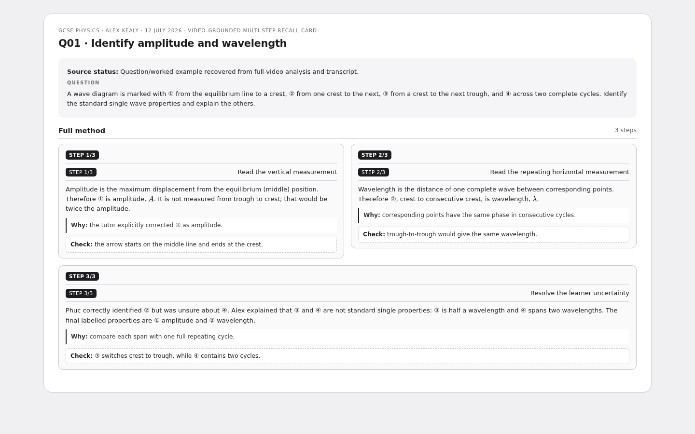
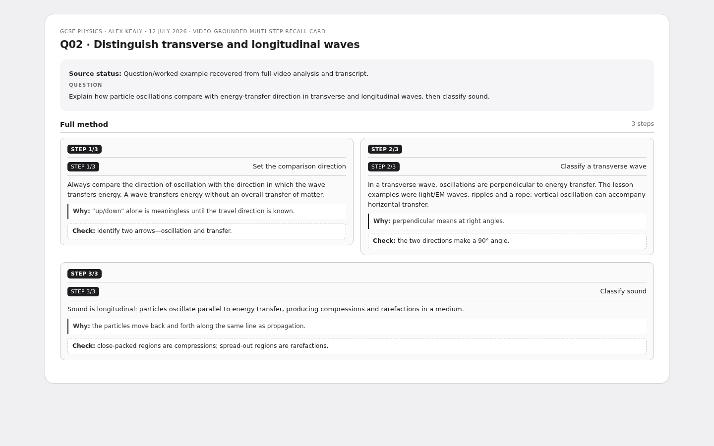
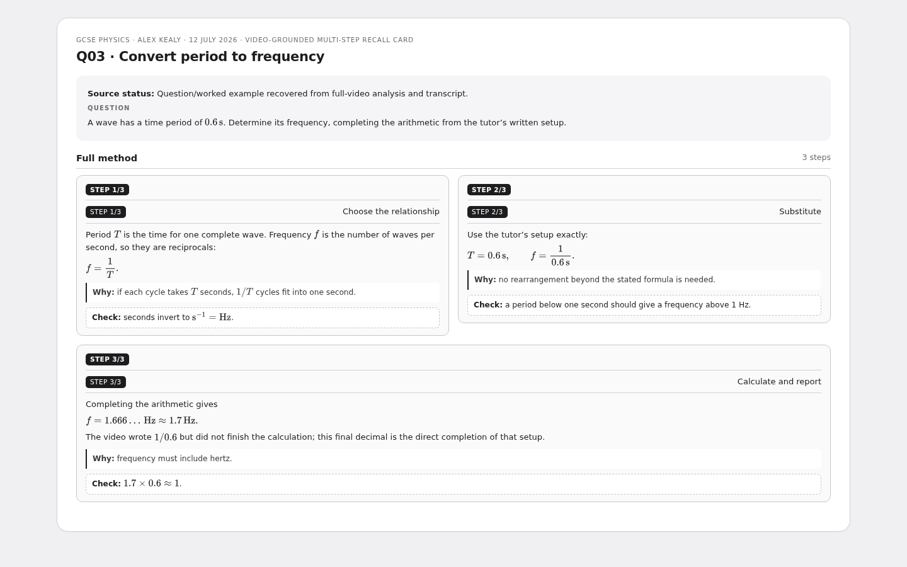
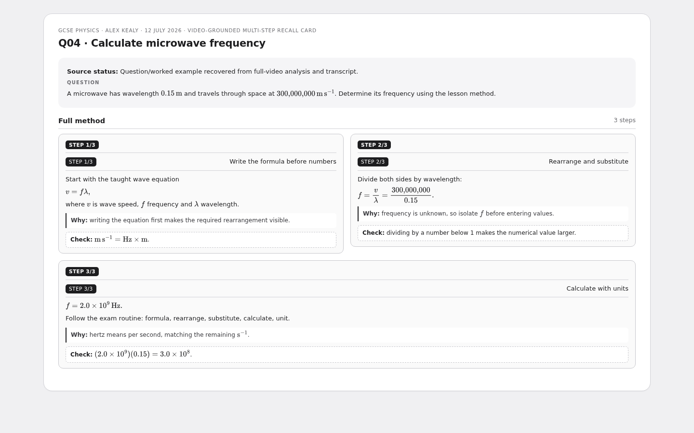
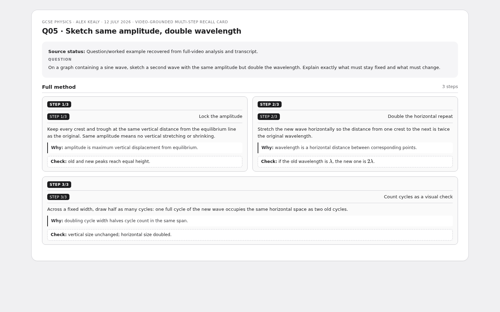
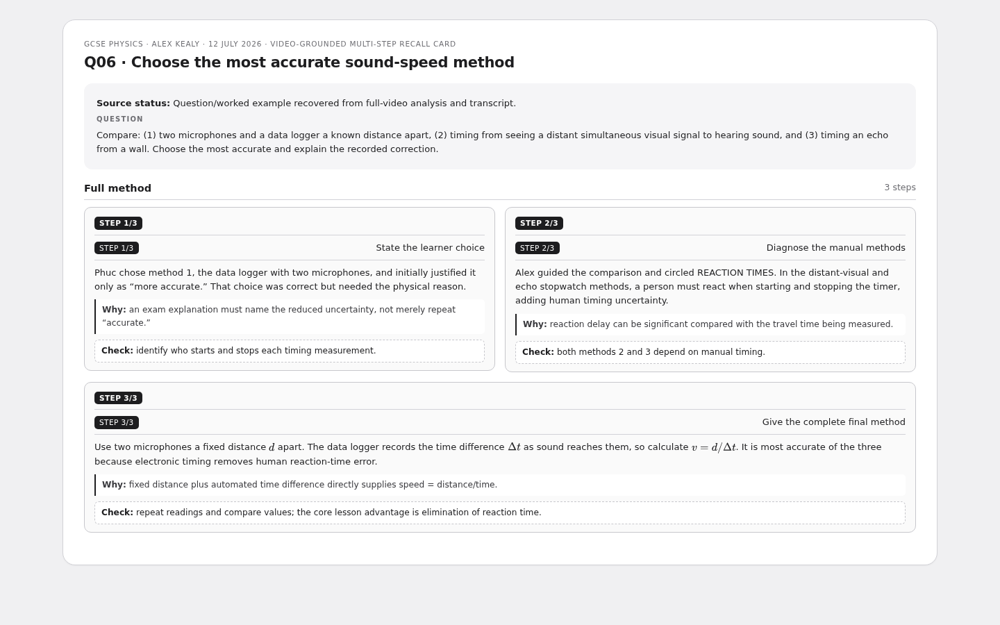

Sound & Waves, Frequency, Amplitude
Six canonical S1-layout multi-step recall cards grounded in Alex Kealy’s 12 July 2026 full-video analysis and transcript. Each PNG shows the fully revealed method.
6 cardsAlexMulti-step
Q01 · Identify amplitude and wavelength

Q02 · Distinguish transverse and longitudinal waves

Q03 · Convert period to frequency

Q04 · Calculate microwave frequency

Q05 · Sketch same amplitude, double wavelength

Q06 · Choose the most accurate sound-speed method
